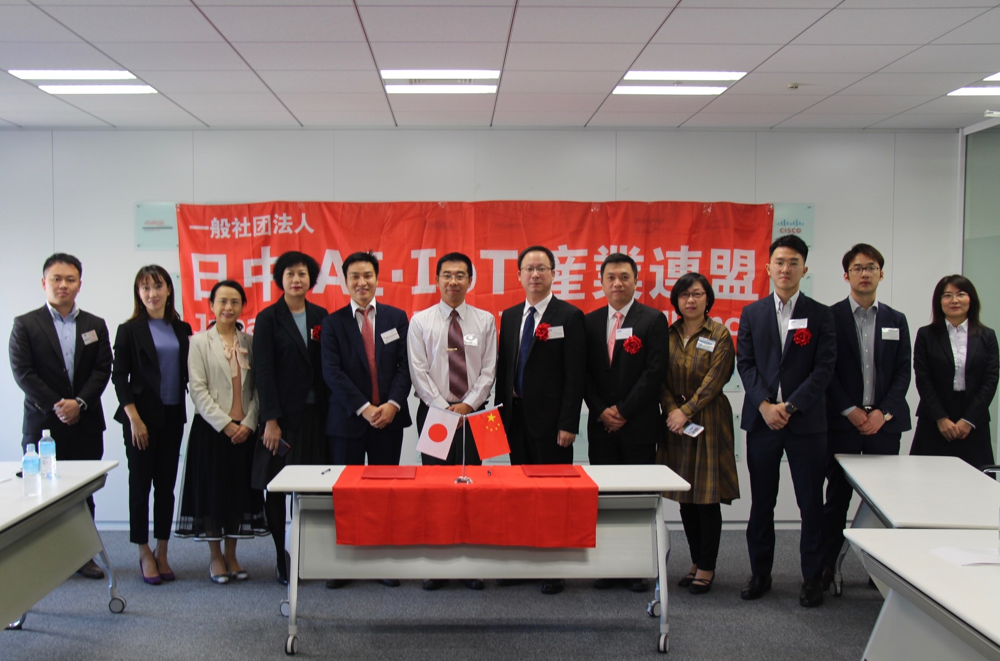
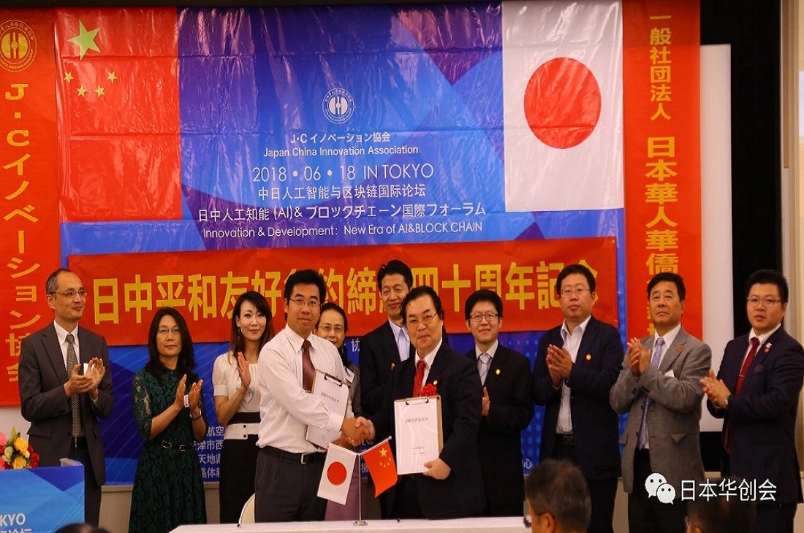

一般社团法人
日中AI·IoT产业联盟
日中AI·IoT产业联盟，受日本政府认可，携手中国和日本的AI·IoT各领域的伙伴，着眼于中日优势互补，促进中日技术与产业化交流与合作，力争在中日之间打造一个更广泛的，国际性的物联网与人工智能的技术与市场交流的平台，让更多的企业和个人了解Al·loT并参与该领域的创新与合作，最终能够在Al·loT领域形成中日互相促进、共同发展的崭新局面。 本联盟于2016年1月在日本东京成立，经过年多的努力，会员达300余位，其中，企业为100多家，涵盖了机器人，大数据，区块链，智慧工业，通信，金融，交通，农业，物流，医疗养老大健康，安全等等众多细分领域；其他成员为各个领域的技术精英或专家学者。 近年来，我们举办了多次专业性和针对性较强的交流活动，新技术新商业模式让大家耳目一新，并且实现了数个领域的项目对接，得到了在日华人，日本学术界和企业界的积极认可， 与数家日本本土物联网和人工智能的协会取得了良好的互动和信赖关系。作为中日间纽带，2017年与中国最大的中关村物联网产业联盟在北京和东京进行多次面对面的交流，成为其在日本的唯一的全面战略合作伙伴。 技术人才汇聚，专业公司云集是本连盟的最主要特点。我们的目标是计划再吸收100家日本企业并做好相应服务。 我们要继续以促进中日间AI·IoT领域的技术协作创新、产业合作发展，联盟做实做強为基本目标，顺应时代技术潮流变化，让日中AI·IoT产业联盟更上一个台阶。

card_travel
設立目的
本协会以AI IOT技术为中心，积极促进日中产业创新以及融合。在AI、IOT、5G、云服务、以及区块链技术等领域集结了各界专家以及相关企业。 对于产业升级，人才培养，国际交流等促进项目具有丰富的经验，旨在未来中日科技交流，科技回馈社会等方面做出相应的贡献。
lightbulb_outline
协会概要
名 称： 日中AI·IoT産業連盟
英文名： JC AI・IoT Industry Alliance
理事长： 劉勁
理 事： 武藤理恵、秦中陵、中西博仁、金子周平、堺夏美、楊錦宇、呉煥友、杜宇航、曲燕斌、朱志民、曲燕斌、高奎波、王丙旭、金啸海、景斌、朱自鹏、姜欣、劉燕林、高雷、梁澤勇、高婕、王鵬、徐放、呂晨、楊可可、張盼盼、劉洋、関昕、鄧宇峰 ※順不同
顾 问： 許炎、楊克倹、劉玉勁、斎藤安造、中原隆志 ※順不同
监 事： 劉炳江
trending_up
组织构成
本协会理事会由理事长，理事以及高级顾问构成。
委员会由技术委员会，产业委员会，运营委员会多位一体，共同构建。
合作伙伴

中関村IoT産業連盟

福建IoT商会

日中科学技術者聯盟
